Chapter 13 Communication with Shiny
Communication of research is central to environmental data science, and while this can use many venues such as professional meetings and publications, outreach on the internet is especially important. This chapter will delve into probably the best way to build a web site for communicating our research: Shiny, used for building interactive web apps, using interactive controls to allow the user to manipulate any of the R analyses and graphics you’ve learned about. But as we’ll see right away, these interactive controls can also be used in R Markdown.
Four ways to use Shiny:
- Shiny Web App: As a web application hosted on a server. This is probably the best way to communicate your work, and includes all of Shiny interactive methods. But to get it on the web, you’ll need to get it hosted. One option for this is to use https://www.shinyapps.io which will host 5 apps with 25 hours usage/month for free, or you can pay for more access. We’ll look at some complete Shiny Web Apps later in this chapter, but also see https://shiny.rstudio.com and https://shiny.rstudio.com/tutorial to learn more.
- Shiny app run locally: The same Shiny web app but run locally on your own computer in RStudio. When you’re building your web app, this is where you’ll start anyway, prepping your app to run well before publishing it to the web.
- Shiny Document: As an R Markdown document with the shiny runtime. It creates an HTML document, using interactive Shiny components. We’re going to start with this method, since it’s the easiest introduction to the input widgets and output options. To learn more, see Chapter 19 in R Markdown, the Definitive Guide (Xie et al. (2019)) and https://www.rstudio.com/wp-content/uploads/2015/02/rmarkdown-cheatsheet.pdf.
- Shiny Presentation: Also using the R Markdown system, creates an IOSlides presentation which uses interactive Shiny components.
13.1 Shiny Document
We’ll start with creating a Shiny Document as a way to introduce Shiny interactive components, but it’s also not a bad option if you just want to create an interactive environment for your own work, and it’s also pretty easy to share with others, like we’ve already seen with R Markdown. But since Shiny requires a host to run the R code on, we can’t really create it as interactive objects in this book without accessing a hosted Shiny app (which you can do, see Xie (2021)), but we’ll include snips below to show you what it looks like. After we’ve learned about these interactive components, we can also use them in a Shiny Web App, but there will be other structural elements we’ll need to add.
To create a Shiny Document, use File>New File>R Markdown… to initiate the process, where we’ll specify that we want to create a Shiny document and give it a title. For this first one, we’ll just create its default document that accesses the faithful (Old Faithful eruptions) built-in data, so we’ll give it that name (Figure 13.1).
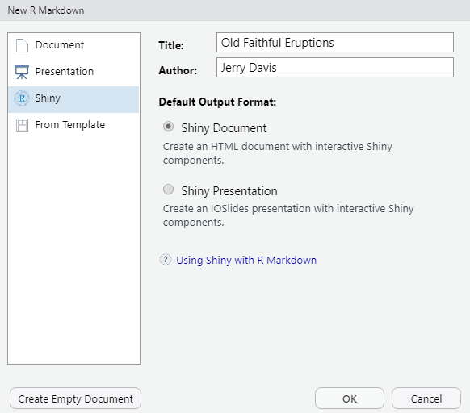
FIGURE 13.1: New Shiny Document dialog
When we OK this, we’ll see the R Markdown document opened in the RStudio script editor (Figure 13.2).
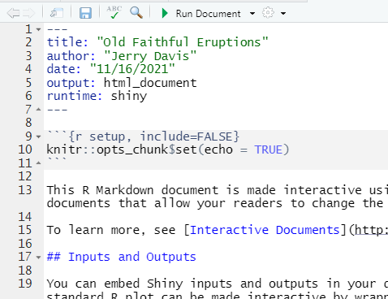
FIGURE 13.2: Shiny Document Editor
The key to this document working in the shiny runtime environment is to make sure to specify this in the YAML header. At minimum, this header needs to include two settings:
---
output: html_document
runtime: shiny
---Let’s start by going ahead and running it with the Run Document button, which due to the shiny runtime option replaces the Knit button we’d normally see in R Markdown (Figure 13.3).
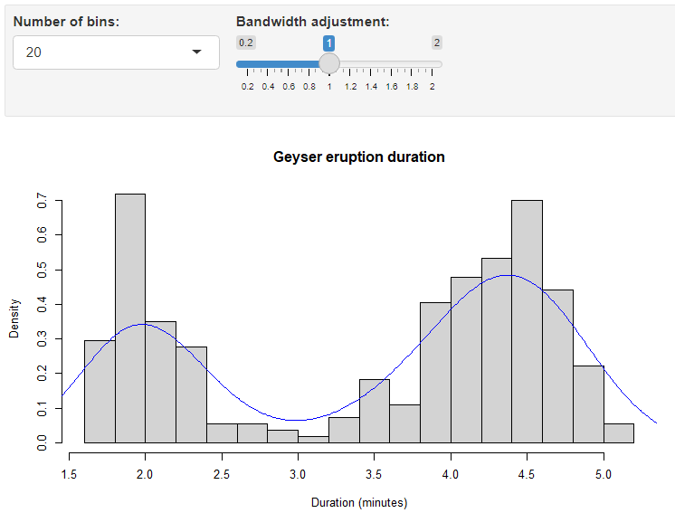
FIGURE 13.3: Old Faithful geyser eruptions Shiny interface
So now we have a simple example to explore how it works. We’ll start by exploring its components, so keep this document open to try things out.
13.1.1 Input and output objects in the Old Faithful Eruptions document
In either markdown or app mode, we can create a variety of Shiny input widgets and output objects:
- Inputs are the interactive controls (widgets) that let the user change the resulting output.
- Outputs are the graphs, maps, or tables, and are automatically updated whenever inputs change.
The code for the Old Faithful Eruptions document includes a couple of widget-controlled input settings to be used in a plot produced by renderPlot
- a
selectInputthat is used to set thebreaksparameter for thehistfunction as a number of bins - a
sliderInputto set theadjust(bandwidth adjustment) parameter for the density plot
Note how the input variables are accessed by the output function as input$n_breaks and input$bw_adjust:
inputPanel(
selectInput("n_breaks", label = "Number of bins:",
choices = c(10, 20, 35, 50), selected = 20),
sliderInput("bw_adjust", label = "Bandwidth adjustment:",
min = 0.2, max = 2, value = 1, step = 0.2)
)This is then followed by the plot object:
renderPlot({
hist(faithful$eruptions, probability = TRUE, breaks = as.numeric(input$n_breaks),
xlab = "Duration (minutes)", main = "Geyser eruption duration")
dens <- density(faithful$eruptions, adjust = input$bw_adjust)
lines(dens, col = "blue")
})This is then followed by an embedded shiny app, but we won’t look at it.
13.1.2 Input widgets
We’ll continue to explore the various input widgets and related outputs, and stick with R Markdown. You’ll still need to run the entire document, so you might want to make separate documents – just make sure they have the YAML header above. Go ahead and create a new Shiny document, the same as above, but create an empty document and then enter the YAML header and one code chunk to create a simple numericInput widget and print output (Figure 13.4).
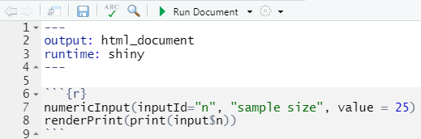
FIGURE 13.4: numericInput and renderPrint code
Once you save it, you’ll see the Run Document button if the YAML code is right. Go ahead and run it to see the input. It’s not very interesting, but you can see that the printed output changes with the input. Let’s add a slider (Figure 13.5).
numericInput(inputId="n", "sample size", value = 25)
renderPrint(print(input$n))
sliderInput(inputId="i", "input", min=1, max=30, value = 15)
renderPrint(print(input$i))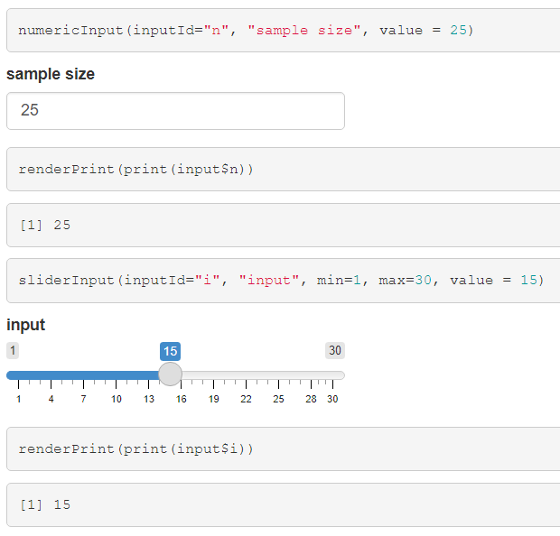
FIGURE 13.5: Numeric and slider inputs and print outputs
We’ll explore some other input widgets and outputs. You can also see these on the Shiny cheatsheet …
https://shiny.rstudio.com/images/shiny-cheatsheet.pdf
… but just look at the part about the input and output objects. The cheatsheet is focused on creating Shiny Web Apps, so there’s a lot there about building that structure, with a user interface (ui) and server. We’ll get to those later.
13.1.2.1 A plot output
The above widgets went to a rendered print output, but the same simple inputs can of course be used to create a plot (Figure 13.6).
sliderInput(inputId="bins", "number of bins", min=1, max=30, value = 15)
renderPlot(hist(rnorm(100), breaks=input$bins))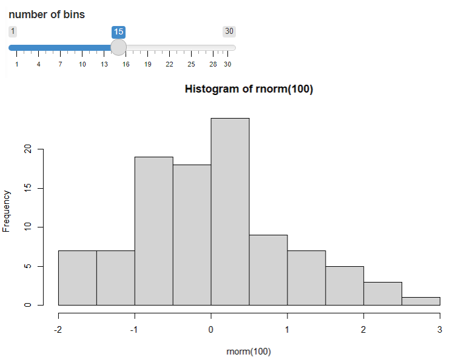
FIGURE 13.6: Plot modified by input
13.1.3 Other input widgets
There are lots of other input widgets that are pretty easy to see how they apply based on the type of control we need to set, such as radio buttons and check boxes (Figure 13.7).
radioButtons()for choosing just one, and by default the first is chosen
radioButtons(inputId="which_one", label="Select:",
choices = c("Choice 1"="Choice1","Choice 2"="Choice2","Choice 3"="Choice3"))
renderPrint(print(input$which_one))checkboxGroupInput()for choosing multiples
checkboxGroupInput(inputId="which", label="Select:",
choices = c("Choice 1"="Choice1","Choice 2"="Choice2","Choice 3"="Choice3"))
renderPrint(print(input$which))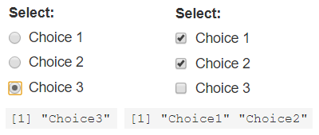
FIGURE 13.7: Radio buttons and check boxes
dateInput()
textInput()
13.2 A Shiny App
The above input widgets and output objects we looked at in a Shiny document can also be built into a Shiny app, which has a place for inputs and outputs. The following simple Shiny inline app illustrates the basic elements (Figure 13.8).
- Optionally some code at the top to set things up, such as loading packages and setting up data.
- The ui section, which determines what the user will see, such as input widgets (like
numericInput) and an area to plot things in, in this caseplotOutput. In order to fit well on the page, thefluidPagefunction is used to hold it in; we could have also usedinputPanelas we did earlier, but the result is not as well laid out. - The server section, which uses two parameters (input, output) created in the user interface to:
- provide data from the input widget (in this case
numericInputwhich createsinput$n) such as parameter settings to functions (e.g.rnorm()here which needs a sample size provided byinput$n) in the rendered output (of in this casehist) - to render an output using a render___ method such as
renderPlotwhich will run everything inside it (in this case a histogram)
- provide data from the input widget (in this case
- Providing that
uiandserverto theshinyAppfunction.
library(shiny)
ui <- fluidPage(
numericInput(input="n",
"Sample size", value=25),
plotOutput(outputId = "hist"))
server <- function(input, output) {
output$hist <- renderPlot({
hist(rnorm(input$n))
})
}
shinyApp(ui=ui,server=server)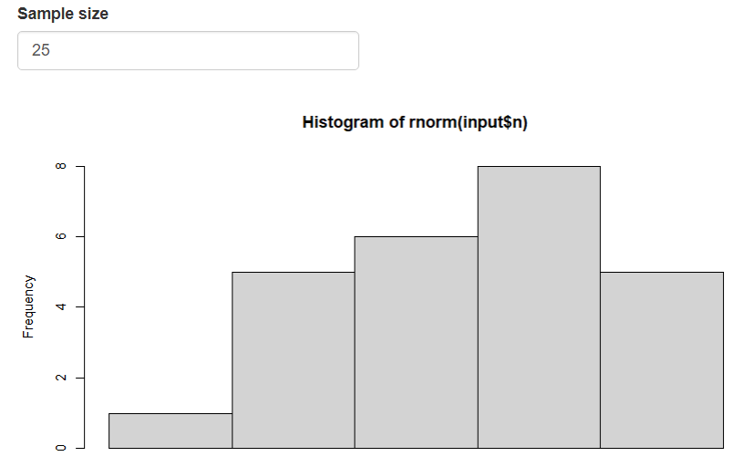
FIGURE 13.8: Simple Inline app
This Shiny app is very short, which is useful in wrapping your head around these basic elements, which is important to understand. It can be run either as an inline app in R Markdown, in a standard R script (but all code has to be selected and then run), or as an app that can be published online.
We’ll go ahead and create a new Shiny Web App to run locally (Figure 13.9). You can either create a special type of RStudio project called Shiny Web Application, in a new or existing folder, or just create a Shiny Web App script as a file, as shown here. In either case, your app file should be named app.R.
- Use the file menu to create a new file, specifying Shiny Web App as the type, and it’ll end up being named
app.R. (You can also name it something else, but this is the name you’ll need to use to create a fully functioning Shiny Web App.) - Go with the defaults again, and you’ll end up with Shiny Web App version of the Old Faithful Eruptions document we created above, though a bit simpler, with only one input control and only a histogram.
- To run it, use the Run App button in the upper right of the code editor window.
- Have a look at what’s created in the
app.Rscript.
Then either create a new blank R script, or edit this one and replace the old faithful code with the above even simpler code in the figure above. Note that to get the Run app button in the RStudio script editor window, the code just needs to include library(shiny) and be a complete app, with a ui and server section, and the shinyApp function at the end.
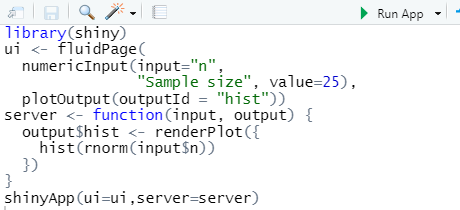
FIGURE 13.9: Simple inline coding
13.2.1 A brief note on reactivity
Since Shiny is an interactive environment, user operations are sensed as events, putting in motion a reaction of the program to that event. You can see that happening every time we adjust things in an input widget and the output changes in response. There’s a lot to reactivity, so please review the tutorial at https://shiny.rstudio.com/tutorial to gain a better understanding than we’ll be able to do here. We’ll look at some examples in the longer apps described below.
13.3 Shiny App I/O Methods
One thing to note about how the Shiny web app works as opposed to just using the interactive methods in the Shiny Document we looked at earlier is the way the ui and server communicate about the plot creation: We didn’t use plotOutput in the I/O methods; we just used the input widgets to set parameters in the renderPlot.
Instead, this Shiny web app has the renderPlot in the server section, and a new function plotOutput is used to both specify the location of the plot and set outputId to be used as a variable to append to output$ in the server section. This can be a little confusing, so spend some time seeing how this works in the simple apps we just looked at, then start exploring other ones. The layout of the ui can make this even more confusing, as they’re set up in various ways. This isn’t surprising if you’ve spent much time in software development – the user interface is often the biggest challenge.
Referring to the Outputs section of the cheat sheet, we can see that various render*() functions work with corresponding *Output() functions:
renderDataTable()works withdataTableOutput()renderImage( )works withimageOutput()renderPlot( )works withplotOutput()renderPrint( )works withverbatimTextOutput()renderTable( )works withtableOutput()renderText( )works withtextOutput()renderUI( )works withuiOutput()andhtmlOutput()
And there are others. For instance, as we’ll see in the next document:
renderLeaflet( )works withleafletOutput()
13.3.1 Data tables
Use renderDataTable() and dataTableOutput() (Figure 13.10)
library(shiny); library(tidyverse)
ui <- fluidPage(
numericInput(input="n",
"Sample size", value=25),
dataTableOutput(outputId = "varTable"))
server <- function(input, output) {
output$varTable <- renderDataTable(tibble(a=rnorm(input$n), b=rnorm(input$n)))}
shinyApp(ui=ui,server=server)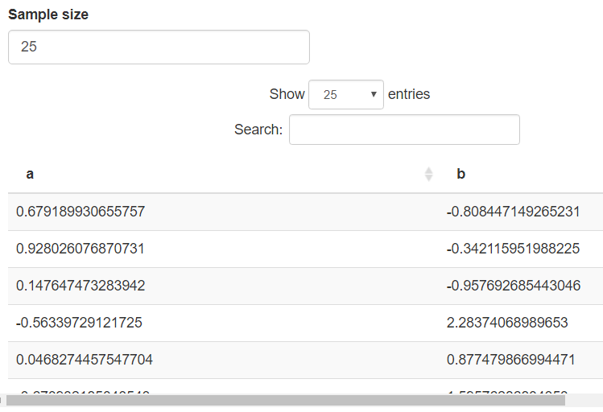
FIGURE 13.10: Rendered data table
13.3.2 Text as character: renderPrint() and verbatimTextOutput()
These functions produce a mono-spaced-font output like a character variable.
13.3.3 Formatted text
Use renderText() and textOutput() (Figure 13.11)
library(shiny); library(tidyverse)
ui <- fluidPage(
textInput(inputId="text", label="Enter text:", value="Some text"),
textOutput(outputId = "prn"))
server <- function(input, output) {
output$prn <- renderText(print(input$text))}
shinyApp(ui=ui,server=server)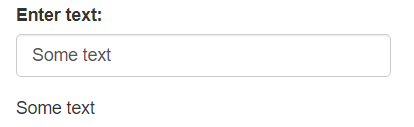
FIGURE 13.11: Text entry and rendered text
13.3.4 Plots
Use renderPlot() and plotOutput() (Figure 13.12)
library(shiny); library(tidyverse)
ui <- fluidPage(
sliderInput(inputId="i", "input", min=1, max=30, value = 15),
textInput(inputId="title", label="Enter title:", value="Tukey boxplot"),
plotOutput(outputId = "Tukey"))
server <- function(input, output) {
output$Tukey <- renderPlot(boxplot(rnorm(input$i),main=input$title))}
shinyApp(ui=ui,server=server)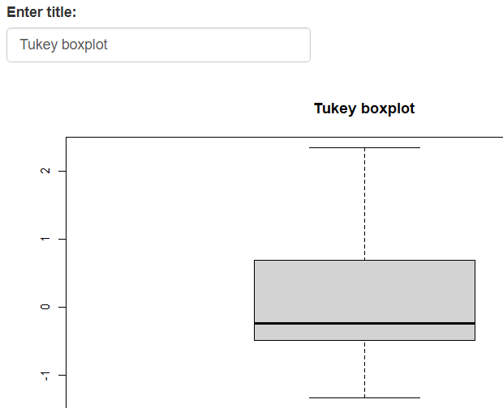
FIGURE 13.12: Rendered box plot
13.4 Shiny App in a Package
A Shiny app project folder can also be stored in the extdata folder of a data package. Here’s a sierra app accessed this way, which you can run from RStudio, either pasted into the console or saved in a script and run by marking the text and running. The Run app button won’t appear even from a saved script, because what you’re editing is not a full Shiny app script; it just calls one.
shiny::shinyAppDir(ex("sierra"))Note the use of system.file to provide the app folder location to shinyAppDir. You can find this sierra folder in the igisci extdata folder, so as long as you have the data package installed, it should run. And the igisci package has a function sierra() that simply runs the above so that’s all you have to enter if you have the library in effect with library(igisci), and you’ll see it appear in a new window (Figure 13.13).
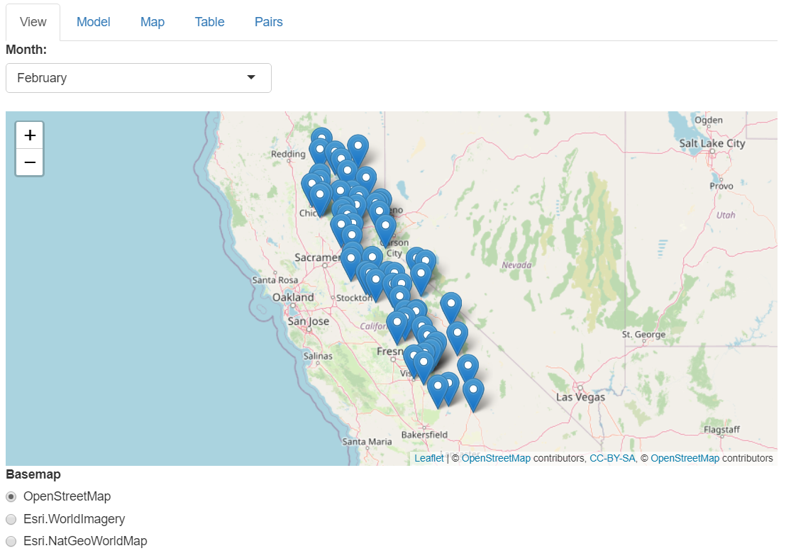
FIGURE 13.13: Shiny app of Sierra climate data, with multiple tabs available
We’ll look at this app in detail next, so you should have it open in another window, using the above method, or simply by running:
igisc::sierra()
13.5 Components of a Shiny App (sierra)
Lets break down the components of the sierra Shiny app to see how a tabsetPanel Shiny app works. A review of the cheat sheet will show you that this is just one of a variety of Shiny app ui structures. We’ll also see how reactive elements work in the server section.
13.5.1 Initial data setup
Most Shiny apps are going to need some initial code that sets up the data. I sometimes use the source method to call this code. We won’t look at this now, but it’s provided here to be able to identify where data in the main Shiny app code goes.
library(shiny); library(sf); library(leaflet); library(rgdal)
library(tidyverse); library(terra)
library(igisci)
sierraAllMonths <- read_csv(ex("sierra/Sierra2LassenData.csv")) %>%
filter(MLY_PRCP_N >= 0) %>%
filter(MLY_TAVG_N >= -100) %>%
rename(PRECIPITATION = MLY_PRCP_N, TEMPERATURE = MLY_TAVG_N) %>%
mutate(STATION = str_sub(STATION_NA, end=str_length(STATION_NA)-6))
sierraJan <- sierraAllMonths %>% # to create an initial model and var name symbols
sample_n(0) %>% # just gets variable names
dplyr::select(LATITUDE, LONGITUDE, ELEVATION, TEMPERATURE, PRECIPITATION)
sierraVars <- sierraJan %>% # Builds list of variables for map
mutate(RESIDUAL = numeric(), PREDICTION = numeric()) %>%
dplyr::select(ELEVATION, TEMPERATURE, PRECIPITATION, RESIDUAL, PREDICTION)
# Create basemap, using the weather station points to set the bounding dimensions
co <- CA_counties
ct <- st_read(ex("sierra/CA_places.shp"))
ct$AREANAME_pad <- paste0(str_replace_all(ct$AREANAME, '[A-Za-z]',' '), ct$AREANAME)
hillsh <- rast(ex("CA/ca_hillsh_WGS84.tif"))
hillshptsT <- as.points(hillsh)
hillshpts <- st_as_sf(hillshptsT)
CAbasemap <- ggplot() +
geom_sf(data = hillshpts, aes(col=ca_hillsh_WGS84)) + guides(color = F) +
geom_sf(data = co, fill = NA) +
scale_color_gradient(low = "#606060", high = "#FFFFFF") +
labs(x='',y='')
spdftemp <- st_as_sf(sierraAllMonths, coords = c("LONGITUDE","LATITUDE"), crs=4326)
bounds <- st_bbox(spdftemp)
sierrabasemap <- CAbasemap +
geom_sf(data=ct) +
geom_sf_text(mapping = aes(label=AREANAME_pad), data=ct, size = 3,
nudge_x = 0.1, nudge_y = 0.1) +
coord_sf(xlim = c(bounds[1], bounds[3]), ylim = c(bounds[2],bounds[4]))
# Function used by pairs plot:
panel.cor <- function(x, y, digits = 2, prefix = "", cex.cor, ...)
{
usr <- par("usr"); on.exit(par(usr))
par(usr = c(0, 1, 0, 1))
r <- abs(cor(x, y))
txt <- format(c(r, 0.123456789), digits = digits)[1]
txt <- paste0(prefix, txt)
if(missing(cex.cor)) cex.cor <- 0.8/strwidth(txt)
text(0.5, 0.5, txt, cex = cex.cor * r)
}13.5.2 The ui section, with a tabsetPanel structure
In this section, we’re setting up the tabsetPanel structure, allowing the user to select whether to look at the various outputs:
- View: A leaflet map of the Sierra stations, and an ability to choose which month to process, and radio buttons to choose a basemap. The month choice structure took a bit to figure out; note the named indices.
- Model: Scatter plot and trend line of a linear model, with the ability to change the x and y variables.
- Map: Map of the variables in the data, or the regression or residuals. Input to choose which to display.
- Table: Table of the data for the chosen month. No inputs.
- Pairs: A pairs plot of the data, for the chosen month. No inputs.
ui <- fluidPage(title = "Sierra Climate",
tabsetPanel(
tabPanel(title = "View",
selectInput("month", "Month:",
c("January"=1, "February"=2, "March"=3,
"April"=4, "May"=5, "June"=6,
"July"=7, "August"=8, "September"=9,
"October"=10,"November"=11,"December"=12)),
leafletOutput("view"),
radioButtons(inputId = "LeafletBasemap", label = "Basemap",
choices = c("OpenStreetMap" = "open",
"Esri.WorldImagery" = "imagery",
"Esri.NatGeoWorldMap" = "natgeo"),
selected = "open")),
tabPanel(title = "Model",
plotOutput("scatterplot"),
varSelectInput("xvar", "X Variable:", data=sierraJan,
selected="ELEVATION"),
varSelectInput("yvar", "Y Variable:", data=sierraJan,
selected="TEMPERATURE"),
verbatimTextOutput("model")),
tabPanel(title = "Map",
plotOutput("map"),
varSelectInput("var", "Variable:", data=sierraVars,
selected="TEMPERATURE")),
tabPanel(title = "Table",
textOutput("eqntext"),
tableOutput("table")),
tabPanel(title = "Pairs",
textOutput("monthTitle4Pairs"),
plotOutput("pairsplot"))
)
)13.5.3 The server section, including reactive elements
This section starts with a series of specifically reactive functions using the reactive function. These are functions that are used in the main output (or in other reactive functions) that change the data. Here we see the following reactive functions:
mod(): reads theinput$xvarandinput$yvarand creates a linear modelsierraMonth(): reads theinput$monthand filters the month and selects all the relevant variablessierradf(): runsmod()and assignsRESIDUALandPREDICTIONvariablessierraSp(): responds tosierradf()by then creating an sfeqn(): responds tomod()by changing the model character string to put on a map
server <- function(input, output) {
mod <- reactive({
lm(as.formula(paste(input$yvar, '~', input$xvar)), data=sierraMonth())
})
sierraMonth <- reactive({
monthsel <- 201000 + as.numeric(input$month)
sierraAllMonths %>%
filter(DATE == monthsel) %>%
dplyr::select(STATION,ELEVATION,LATITUDE,LONGITUDE,TEMPERATURE,PRECIPITATION)
})
sierradf <- reactive({
sierraMonth() %>%
mutate(RESIDUAL = resid(mod()), PREDICTION = predict(mod()))
})
sierraSp <- reactive(st_as_sf(sierradf(),
coords=c("LONGITUDE","LATITUDE"),crs=4326))
eqn <- reactive({
cc = mod()$coefficient
paste(input$yvar, " =", paste(round(cc[1],2), "+",
paste(round(cc[-1], digits=3),
sep="*", collapse=" + ",
paste(input$xvar))))
})Then the outputs, each with a render____ function:
output$view: a Leaflet map for the View taboutput$map: a ggplot map for the Map taboutput$scatterplot: a scatter plot and trend line for the Model taboutput$model: a summary of the lmoutput$eqntext: information on the model for the Table taboutput$monthTitle4Model: a title for the Model taboutput$monthTitle4Pairs: a title for the Pairs taboutput$table: the table for the Table taboutput$pairsplot: the pairs plot for the Pairs tab
output$view <- renderLeaflet({
providerTiles <- providers$OpenStreetMap
if(input$LeafletBasemap=="imagery") {
providerTiles <- providers$Esri.WorldImagery}
if(input$LeafletBasemap=="natgeo") {
providerTiles <- providers$Esri.NatGeoWorldMap}
leaflet(data = sierradf()) %>%
addTiles() %>%
addProviderTiles(providerTiles) %>%
addMarkers(~LONGITUDE, ~LATITUDE,
popup = ~str_c(ELEVATION,"m ", month.name[as.numeric(input$month)], ": ",
TEMPERATURE, "°C ", PRECIPITATION, "mm"),
label = ~STATION)
})
output$map <- renderPlot({
subTitle <- ""
if((input$var == "RESIDUAL")|(input$var == "PREDICTION")){
subTitle <- eqn()}
v <- get(paste(input$var), pos=sierradf()) # just to be able to use the vector
sierrabasemap +
geom_sf(mapping = aes(color = !!input$var), data=sierraSp(), size=4) +
coord_sf(xlim = c(bounds[1], bounds[3]), ylim = c(bounds[2],bounds[4])) +
scale_color_gradient2(low="blue", mid="ivory2", high="darkred",
midpoint=mean(v)) +
labs(title=paste(month.name[as.numeric(input$month)], input$var),
subtitle=subTitle) + theme(legend.position = c(0.8, 0.85))
})
output$scatterplot <- renderPlot({
ggplot(data = sierradf()) +
geom_point(mapping = aes(x = !!input$xvar, y = !!input$yvar)) +
geom_smooth(mapping = aes(x = !!input$xvar, y = !!input$yvar), method="lm") +
labs(title=month.name[as.numeric(input$month)])
})
output$model <- renderPrint({
print(eqn())
summary(mod())
})
output$eqntext <- renderText(paste(month.name[as.numeric(input$month)],
"data. Residual and Prediction based on linear model: ", eqn()))
output$monthTitle4Model <- renderText(month.name[as.numeric(input$month)])
output$monthTitle4Pairs <- renderText(month.name[as.numeric(input$month)])
output$table <- renderTable(sierradf())
output$pairsplot <- renderPlot({
sierradf() %>%
dplyr::select(LATITUDE,LATITUDE,LONGITUDE,
ELEVATION,TEMPERATURE,PRECIPITATION) %>%
pairs(upper.panel = panel.cor)
})}13.6 A MODIS Fire App with Web Scraping and observe with leafletProxy
We’ll now look at another app, one that uses web scraping and an observe function that together with leafletProxy allows the map to maintain its scaling when we change the data.
The MODIS satellite sensor includes a fire detection layer that the USFS hosts in a way that can be accessed by (some pretty primitive) web scraping, which you can see in the code. This R Markdown document is made interactive using Shiny, and employs an Inline Application with the complete Shiny app code included (Figure 13.14). To learn more about the MODIS product from NASA, see https://modis.gsfc.nasa.gov/data/dataprod/mod14.php
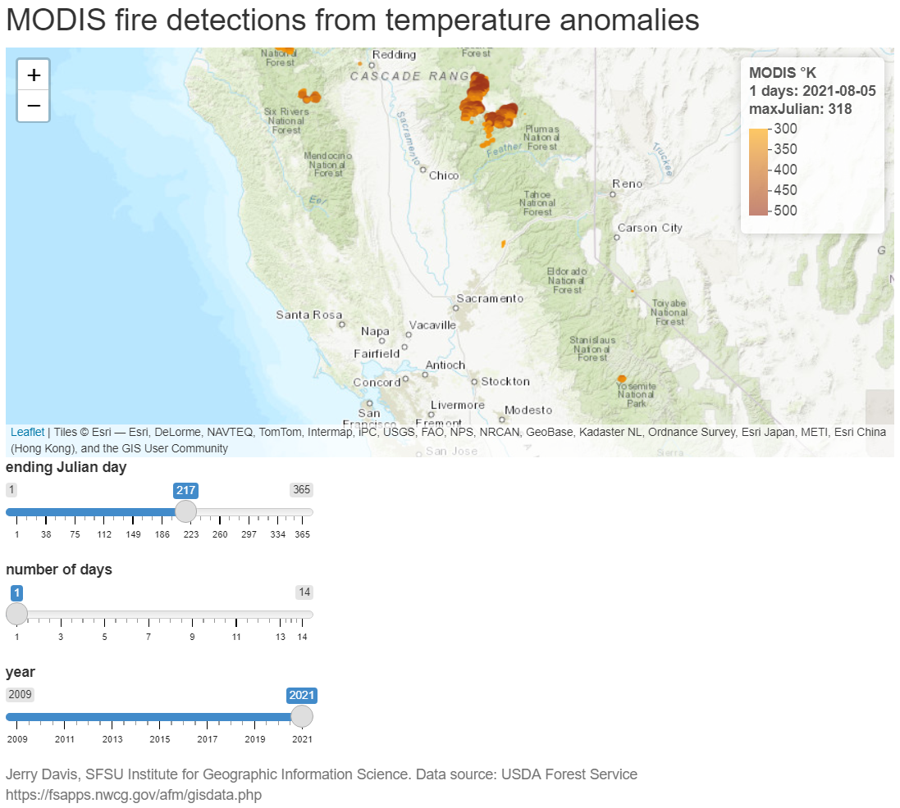
FIGURE 13.14: MODIS fire detection Shiny app
The MODISfire app.R script is also in the data package, in the MODISfire folder, and can be run with shiny::shinyAppDir(ex("MODISfire")), which simply runs the following installed as a function with no input parameters, creating a separate app window.
Note that it takes a while for the map to appear because the data is being downloaded and processed. Every time you change to a new year, there is also a delay as new data is downloaded and processed.
The code shown can also be used to create a Shiny web app by saving it as app.R in an RStudio Shiny app project (or just copying the app.R file from the MODISfire folder in extdata). It will create a "MODISdata" folder to hold data it downloads, to keep the location with Shiny Rmd files uncluttered with the downloaded shapefile data.
13.6.1 Setup code
Note that we’ll create a folder to hold data we download, and make it the working directory.
13.6.2 ui
In terms of complexity of inputs, this app is pretty straightforward – the fluidPage is pretty standard for the ui section.
ui <- fluidPage(
titlePanel("MODIS fire detections from temperature anomalies"),
leafletOutput("view"),
sliderInput(inputId = "end_jday",
label = "ending Julian day",
value = yday(now()), min=1, max=365, step=1),
sliderInput(inputId = "numdays",
label = "number of days",
value = 1, min=1, max=14, step=1),
sliderInput(inputId = "year",
label = "year",
value = year(now()),min=2009,max=year(now()),step=1,sep=""),
helpText(paste("Jerry Davis, SFSU IGISc",
"Data source: USDA Forest Service https://fsapps.nwcg.gov/afm/gisdata.php"))
)13.6.3 Using observe and leafletProxy to allow changing the date while retaining the map zoom
In the server section, we mostly just have the leaflet map, but we need to build in code to do the web scraping and allow changing the date while retaining the zoom.
Web scraping was used to download data for a given year from the USFS. Hopefully their file naming convention stays the way it is; you can see how the shapefile name string is built with wildcard dots for characters.
observe and leafletProxy: Note that in the renderLeaflet section, only the year is reactive so this runs only initially or when the year changes. The observe function doesn’t read the data anew, but just changes some parameters about the map. The trick to getting this to work was then to use leafletProxy to make changes to the map without recreating it. Before I figured this out, the map would start over at its beginning point and you couldn’t then change the date for an area you just zoomed to. This took a while to figure out…
server <- function(input, output, session) {
output$view <- renderLeaflet({ # Only year is reactive, so runs w/year change
yrst <- as.character(input$year)
txt <- read_file(str_c("https://fsapps.nwcg.gov/afm/data/fireptdata/modisfire_",
yrst,"_conus.htm"))
shpPath <- str_extract(txt,
paste0("https://fsapps.nwcg.gov/afm/data/fireptdata/",
"modis_fire_.........conus_shapefile.zip"))
shpZip <- str_extract(shpPath, "modis_fire_.........conus_shapefile.zip")
MODISfile <- str_c(dataPath,"/",str_extract(shpZip,
"modis_fire_.........conus"),".shp")
if(yrst == as.character(year(now())) | !file.exists(MODISfile)) {
shpZipPath <- str_c(dataPath, "/",shpZip)
download.file(shpPath, shpZipPath)
unzip(shpZipPath, exdir=dataPath) }
fires <<- st_read(MODISfile)
leaflet() %>%
addProviderTiles(providers$Esri.WorldTopoMap) %>%
fitBounds(-123,37,-120,39)
})
observe({ # Allows the map to retain its location and zoom
numdays <- input$numdays; end_jday <- input$end_jday
fireFilt <- filter(fires,between(JULIAN, end_jday - numdays, end_jday))
yrst <- as.character(input$year)
dat <- as.Date(end_jday-1, origin=str_c(yrst,"-01-01")) # Julian day fix
leafletProxy("view", data = fireFilt) %>%
clearMarkers() %>%
addCircleMarkers(
radius = ~(TEMP-250)/50, # scales 300-500 from 1:5
color = ~pal(TEMP),
stroke = FALSE, fillOpacity = 0.8) %>%
clearControls() %>% # clears the legend
addLegend("topright", pal=pal, values=~TEMP, opacity=0.6,
title=str_c("MODIS °K</br>",numdays, " days: ",
dat,"</br>maxJulian: ",as.character(max(fires$JULIAN))))
})
}
shinyApp(ui = ui, server = server, options = list(width = "100%", height = 800))13.7 Learn More about Shiny Apps
You should explore these resources to learn more about creating useful Shiny web apps:
- https://shiny.rstudio.com/images/shiny-cheatsheet.pdf
- The Shiny tutorial at https://shiny.rstudio.com/tutorial/, worth spending some time on to learn more about getting Shiny apps working. There’s a lot to understand about reactivity for instance.
To learn more about interactive documents in R Markdown, see Interactive Documents.